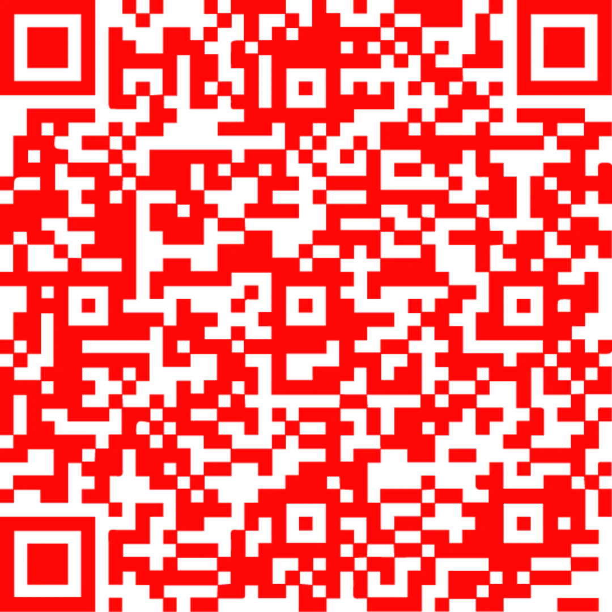
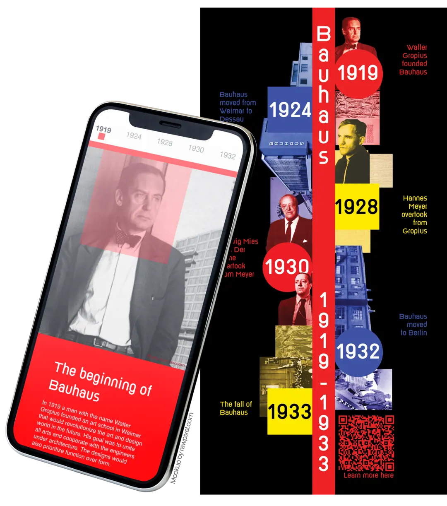
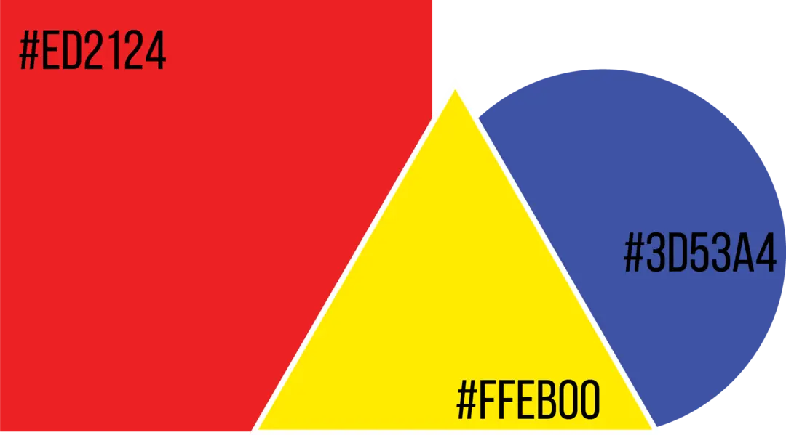
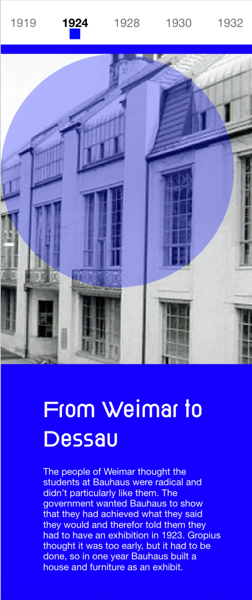
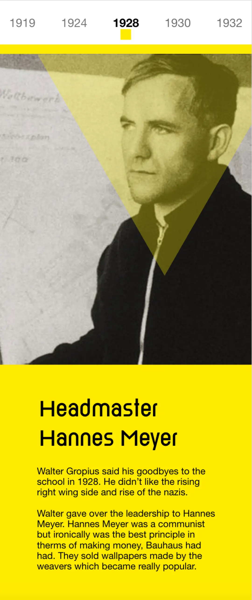
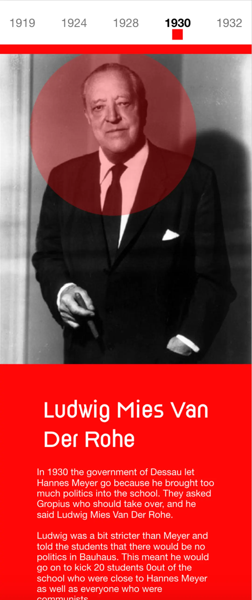
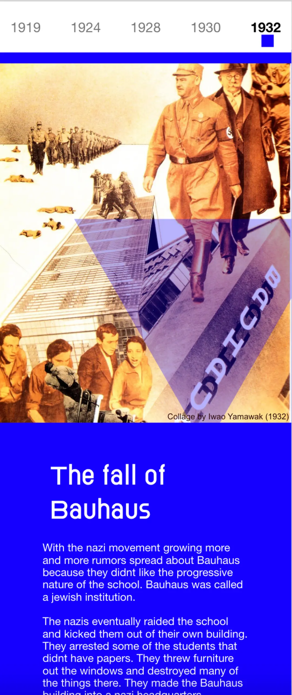
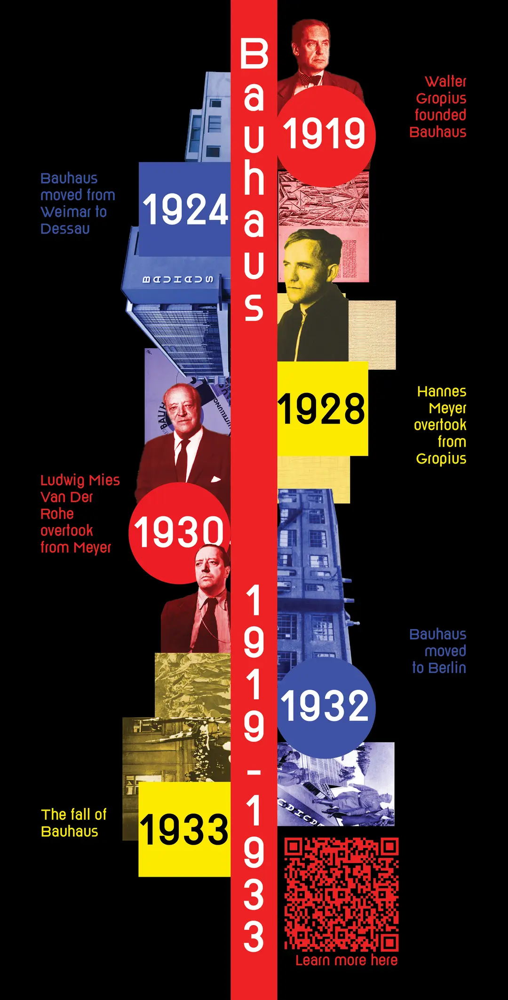

INTERACTIVE EXHIBITION
This is an interactive exhibition about the history of the influential design school Bauhaus. This
project was a school assignment in which we had to tie the physical world to the digital. I did this
via
a QR-code that sends you to the prototype of a mobile website.
Scan or click the QR code below to go to the interactive prototype:


GEOMETRIC SHAPES AND
PRIMARY COLORS
The design takes inspiration from the core principles of Bauhaus.
Function over form, colors have power and simple geometric
shapes.







WORK PROCESS
If you want to learn more about the work process I have attached a pdf of the process below
PROCESS